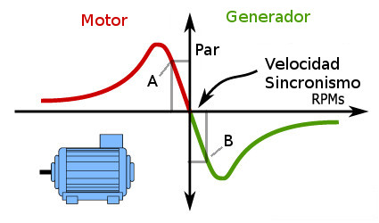

The wind turbine used in this simulator uses an induction electric generator with a short-circuited rotor (also known as a squirrel cage rotor), with the stator directly connected to the grid.
This type of generator, with this connection, determines the conditions under which the wind turbine operates and also how it operates. The graph in Figure 1 shows the characteristics of this induction machine, which can behave as a motor if the speed of its shaft is lower than the synchronous speed, or as a generator if it is higher.

Fig 1Therefore, its use as a generator implies that an external mechanical torque source moves the shaft and keeps it above the synchronous speed. A more detailed explanation can be found in Introduction to induction machines. The external source of mechanical torque in this case is the wind hitting the blades, which causes them to rotate. See more details in Why do the blades rotate?
This type of machine and the way it is connected to the grid also determines how the wind turbine is 'operated'. By 'operated' we now mean how and when the stator is connected to the grid. The stator must remain disconnected from the grid until the rotor shaft speed is immediately above the synchronous speed, otherwise it would behave like a motor. This means that connecting the stator to the grid is a delicate operation in which the generator is kept without electrical load until the frequency of the voltage it generates and its phase coincide with those of the grid. This situation occurs in other power generation facilities and is solved with a specific device. See Soft starter (soft connection) to the grid.